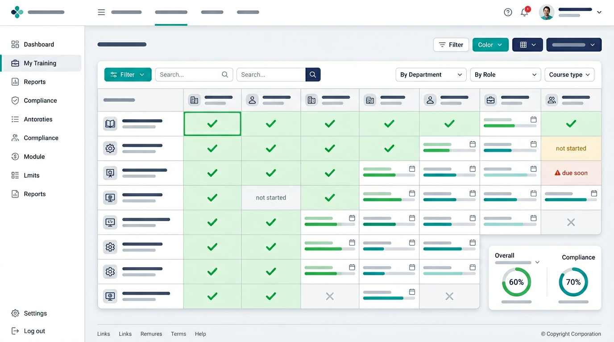
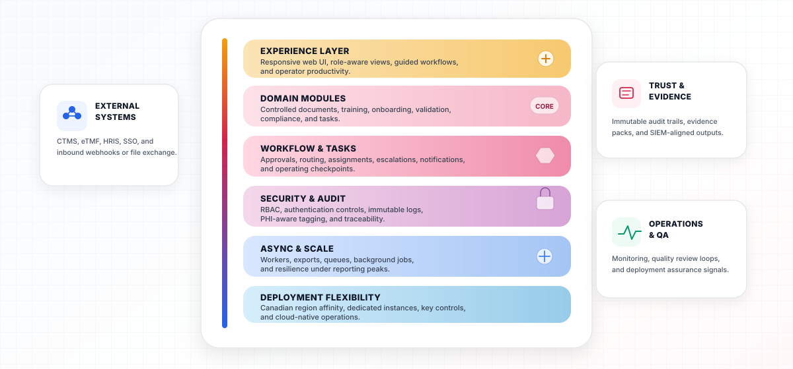

MAESTRO ECMS centralizes controlled documents, qualification records, validation packages, and quality workflows — so your teams spend less time chasing files and more time proving compliance.
From a user’s perspective, the pain is never “missing software” — it is not knowing which file is effective, who was trained on it, and whether you can prove it tomorrow. Spreadsheets, shared drives, and point tools create gaps that surface during audits and inspections. MAESTRO ECMS replaces that fragmentation with a single system of record for content and quality evidence.
Email attachments and informal folders make it impossible to know which SOP or work instruction is current. ECMS enforces version control, access rules, and a clear publication trail.
Qualification matrices decay the moment someone exports them to PDF. Tie training programs, acknowledgements, and role requirements directly to controlled content.
IQ/OQ/PQ artifacts, risk assessments, and traceability matrices scattered across tools slow CSV cycles. Manage validation packages, phases, and milestones in one governed workspace.
When deviations and corrective actions live outside your content system, linkages to procedures and training break. Bring compliance reporting and CAPA into the same audit trail as documents.
New hires and contractors need structured checklists tied to policies and training — not ad hoc tasks. Template-driven onboarding keeps start dates from becoming compliance debt.
Inspectors ask for evidence chains: who saw what, when, and under which effective version. Immutable logs and exportable reports turn fire drills into structured responses.
MAESTRO ECMS is where organizations centralize the full spectrum of controlled and supporting documents — not only GxP SOPs, but corporate policies, training, and evidence that regulators and sponsors expect to see tied together.
Authors, reviewers, and approvers work to one publication path. Staff in the lab, clinic, or office always pull the same effective SOP, policy, or work instruction — not an attachment from someone’s inbox.
Read-and-understand, curricula, and role requirements stay connected to the documents they reference. When a procedure changes, training impact is visible — not buried in a side spreadsheet.
Access, versioning, and acknowledgements leave a coherent trail for QA, internal audit, and health authority review — including how corporate and quality content interlock in real operations.
Typical content spans the whole document stack — from board-facing policy to bench-level instructions. ECMS is built to categorize, control, and retrieve all of it in one place.
Owns document lifecycle, periodic review, and CAPA linkages to procedures. Prepares inspection binders and answers “who was trained on Rev 3?” without a week of detective work.
Consumes effective instructions and study-facing content, completes assigned training, and works from the same metadata-rich library as QA — reducing “wrong version at site” risk.
Uses dashboards and exports for operational readiness, onboarding throughput, and overdue training — treating content and competence as measurable operations, not a folder hierarchy.
Each capability is designed to interoperate — documents feed training, training feeds audits, and validation artifacts stay linked to the systems they qualify.
Centralize SOPs, policies, work instructions, and study-facing content with structured metadata, categories, and version history that stands up to QA review.
Run curricula as programs with modules and lessons, track enrollments, and maintain a living training matrix instead of a quarterly spreadsheet exercise.

Structure validation evidence the way QA expects: packages, items, phases, milestones, and traceability — aligned to GAMP-style thinking without forcing you into rigid legacy tools.
Capture deviations, investigations, and corrective actions with the same rigor you apply to documents — so quality events never disappear into inbox threads.
Turn “first two weeks” into a repeatable, measurable playbook — templates, checklists, and tasks that reference the policies and training new hires must complete.
Teams adopt MAESTRO ECMS to shorten inspection prep, reduce document errors, and give sponsors and partners confidence in your quality system.
Centralized evidence and exports replace manual binder assembly.
Single effective versions and clear ownership reduce wrong-file incidents.
Security, content, and quality events captured with user and context.
One platform narrative from document to training to CAPA closure.
Template-driven paths get regulated staff productive sooner.
Dashboards and notifications for owners, QA, and IT stewards.
MAESTRO ECMS is engineered as a multi-tenant enterprise web application with clear separation between experience, domain logic, governed data, and integration boundaries — so content, training, and quality evidence flow predictably end to end.

Responsive web experience with accessible, role-aware screens for everyday work. A versioned REST API supports automation, bulk extracts, and connectivity to adjacent clinical and quality systems.
Each ECMS area — documents, training, onboarding, validation, compliance — owns its models and services while sharing organization context, permissions, and subscription limits.
Cross-cutting workflow engine supports approvals and operational tasks that span modules, reducing duplicate data entry between quality and operations teams.
Authentication hardening, role-based access control, PHI-aware audit tagging, and immutable logs designed to satisfy QA and IT joint assessments.
Background workers handle heavy exports, notifications, and bulk operations so interactive pages stay responsive during end-of-quarter reporting spikes.
Cloud-native deployment patterns with Canadian region affinity; suitable for dedicated instances where data residency or customer-managed keys are non-negotiable.
Security is not a bolt-on: it is woven through authentication, authorization, logging, and how we handle sensitive research or health information when present.
Security-relevant events, document actions, and configurable compliance tags feed centralized audit logs with user identity, timestamps, and contextual metadata for investigations.
Modern password hashing, MFA-ready flows, and enterprise SSO patterns where your IdP remains the source of truth for workforce identity.
Granular roles and organization-scoped permissions mean contractors, CRAs, and internal staff each see only the ECMS surfaces required for their job.
Encryption in transit (TLS), encryption at rest on managed databases and object stores, and privacy-aligned handling for Canadian PIPEDA / provincial health information expectations.
Deploy on leading providers with primary affinity for Canadian regions when your quality agreement or institutional policy demands it.
RDS, S3, and managed compute patterns for resilient, monitorable deployments.
Natural fit when Entra ID (Azure AD) is already your enterprise directory.
Alternative footprint for multi-cloud strategies and research institution standards.
Simplified operations for dedicated instances and regional proximity.
Where enterprise database or contractual cloud mandates apply.
Additional option for hybrid and regulated industry hosting conversations.
MAESTRO ECMS is developed by RAN BIOLINKS CANADA as the content, training, and compliance backbone that complements MAESTRO Clinical (CTMS, eTMF, QMS) and MAESTRO Inventory Management. The same engineering discipline that powers multi-site supply chain and trial operations now focuses on the documents and evidence that make those operations legitimate.
We build for organizations that must answer to Health Canada, FDA, EMA, or discerning sponsors — where “good enough” file sharing is not enough, and where every training record may be examined.
Headquartered in Canada with deployment patterns that respect data residency and privacy law nuances across provinces.
Features are shaped by CSV, QA, and clinical operations practitioners — not generic file-sync metaphors.
ECMS stands alone or connects to the wider MAESTRO ecosystem as your roadmap matures.
Regular releases with customer-visible improvements to automation, reporting, and integration depth.
Walk through document control, training matrices, and validation packages with our team. We will map your current tools, migration considerations, and the fastest path to inspection-ready operations.